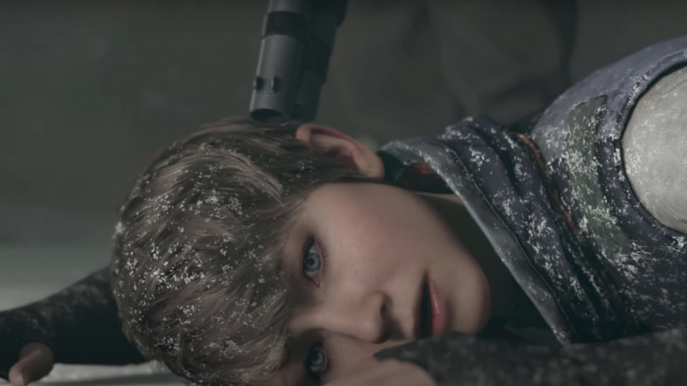

Автор YouTube-канала под ником dragonbane восстановил несколько удалённых сцен из эпизода Detroit: Become Human.
Речь идёт про историю андроида Кэры и девочки Алисы, в частности затрагивая главу «Пиратская бухта» — у героев ломается машина, поэтому Кэре нужно найти место для ночлега. По дороге персонажи обнаруживают парк развлечений, где есть возможность прокатить девочку на карусели.
Однако изначально добродушная сцена могла обернуться трагедией — из игры убрали момент, когда в парк врываются несколько молодых людей с оружием на двух машинах. Они начинают атаковать андроидов развлечения ради, после чего перед Кэрой встаёт ряд выборов.
Она может спрятаться с девочкой или начать угрожать людям оружием, чтобы те уехали (или убедить их словами). Самый плохой вариант — умирают вообще все герои (несколько версий). Последствия этих сцен позже могли отозваться в главе Кары «Ночной поезд», в частности на изменения влияла смерть Лютера.